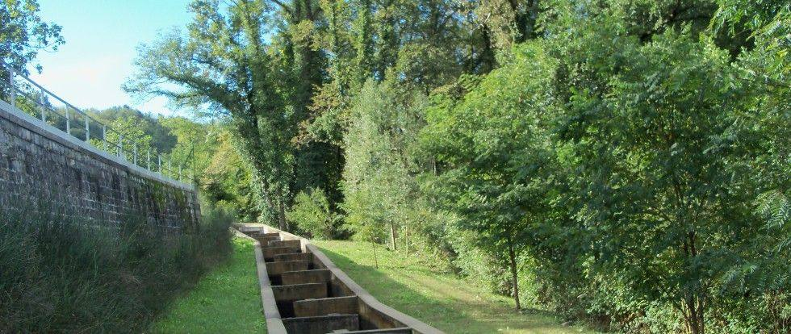

News ·
Prime immagini del videomonitoraggio nei passaggi per pesci

Il personale GRAIA è attualmente impegnato su più fronti nel Progetto Life “Con.Flu.Po” (Life11nat/it/188) e in questo video vengono mostrati alcuni filmati raccolti nell’ambito dell’Azione D.1 del Progetto.
L’Azione D.1 si occupa della verifica del ripristino delle migrazioni ittiche attraverso una rete di passaggi per pesci oggi attivi e di cui farà parte anche il passaggio per pesci attualmente in fase di realizzazione sul Fiume Po, nei pressi della Diga di Isola Serafini (Monticelli d’Ongina, PC).
Questa Azione è partita in data 1 luglio 2013 e oggi riguarda complessivamente il monitoraggio di quattro passaggi per pesci, due dei quali presenti sul Fiume Ticino e due sul Fiume Tresa. Le due infrastrutture blu presenti sul Ticino sono posizionate in corrispondenza della Diga del Panperduto e della Diga di Porto della Torre, entrambe nel Comune di Somma Lombardo (VA); mentre sul Fiume Tresa, i due passaggi per pesci sono posizionati in corrispondenza della Diga di Creva, frazione del Comune di Luino (VA), e a fianco della diga di regolazione dei livelli del Lago di Lugano nel Comune di Lavena Ponte Tresa (VA). In tutti i passaggi per pesci è presente una cabina di monitoraggio, al cui interno sono presenti delle vetrate le quali consentono di osservare i pesci in transito nel passaggio. Inoltre, le cabine sono equipaggiate di sistema di videomonitoraggio attraverso il quale è possibile registrare la fauna ittica in transito e ottenere immagini di grande qualità come quelle presenti nel video.